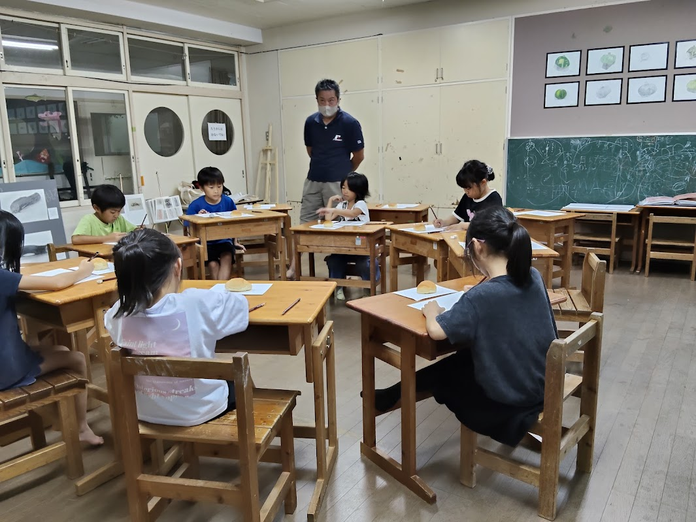
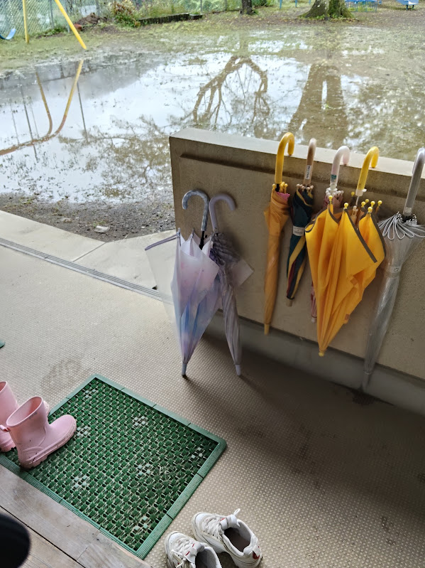
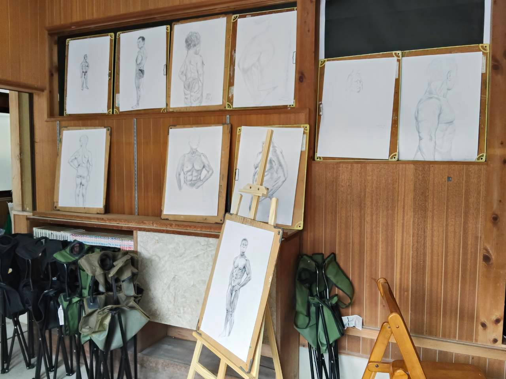
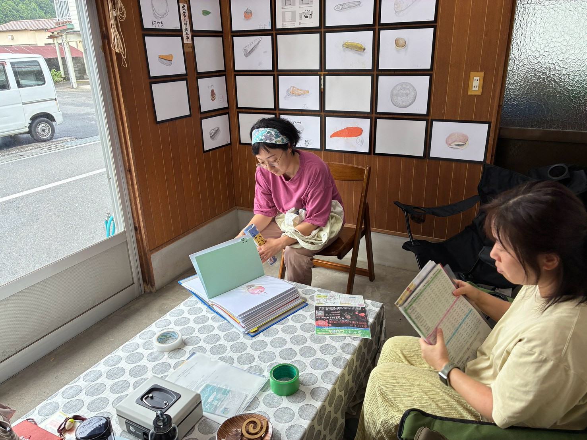
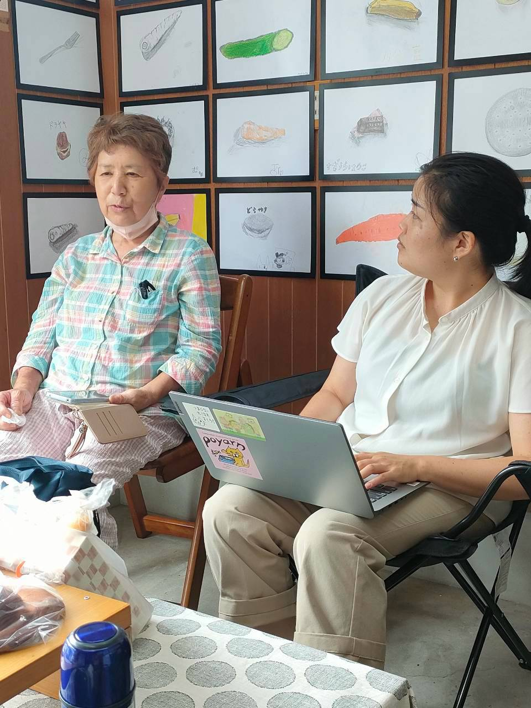
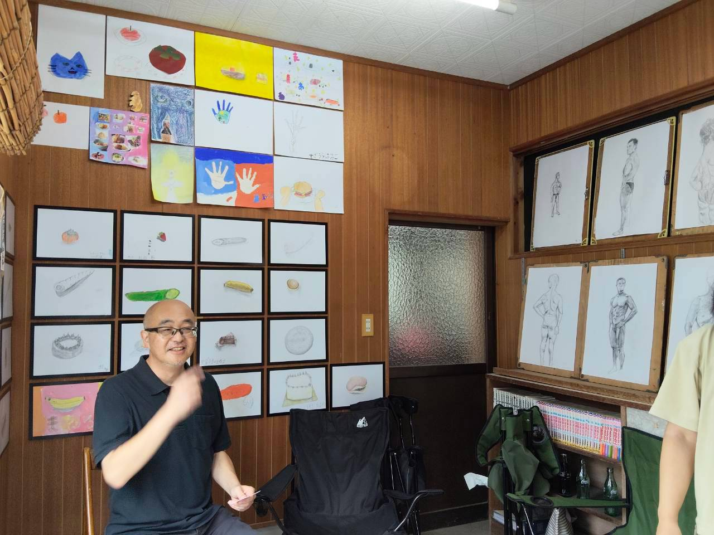
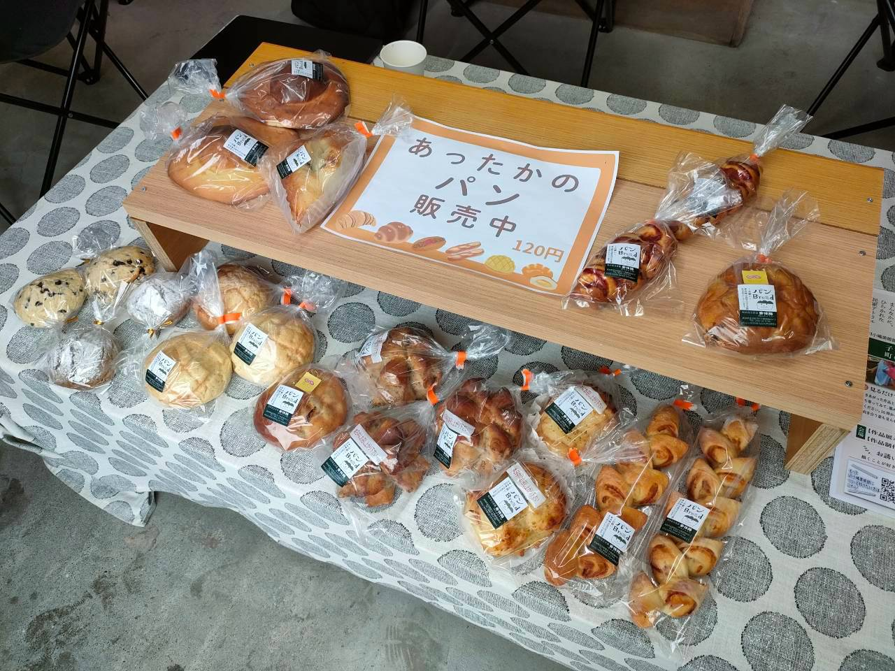
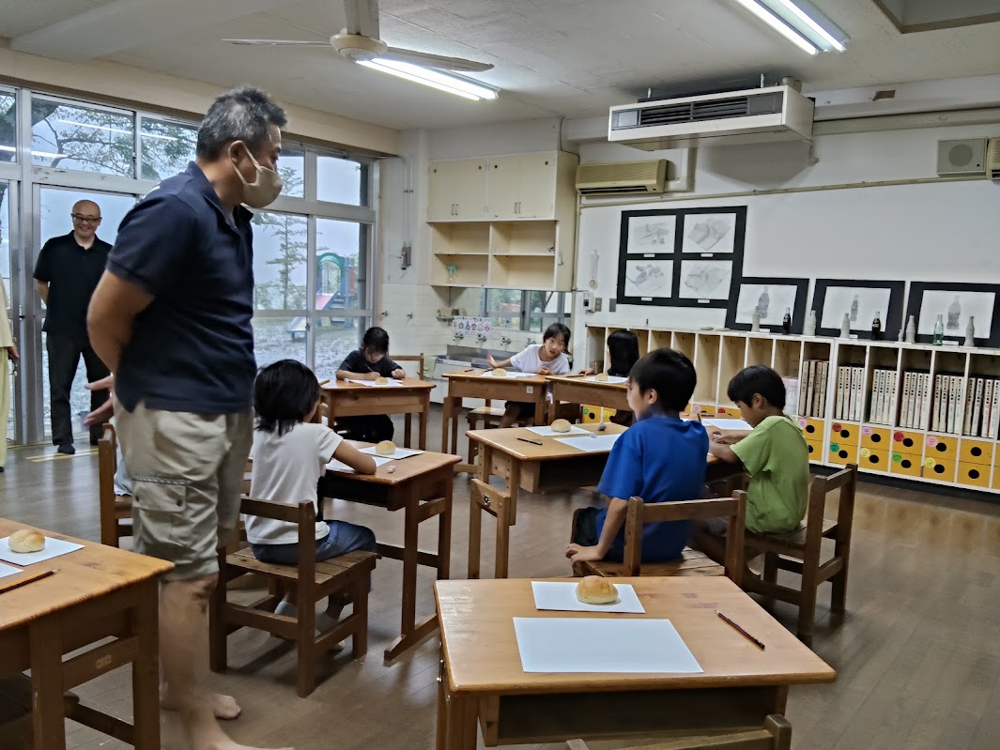
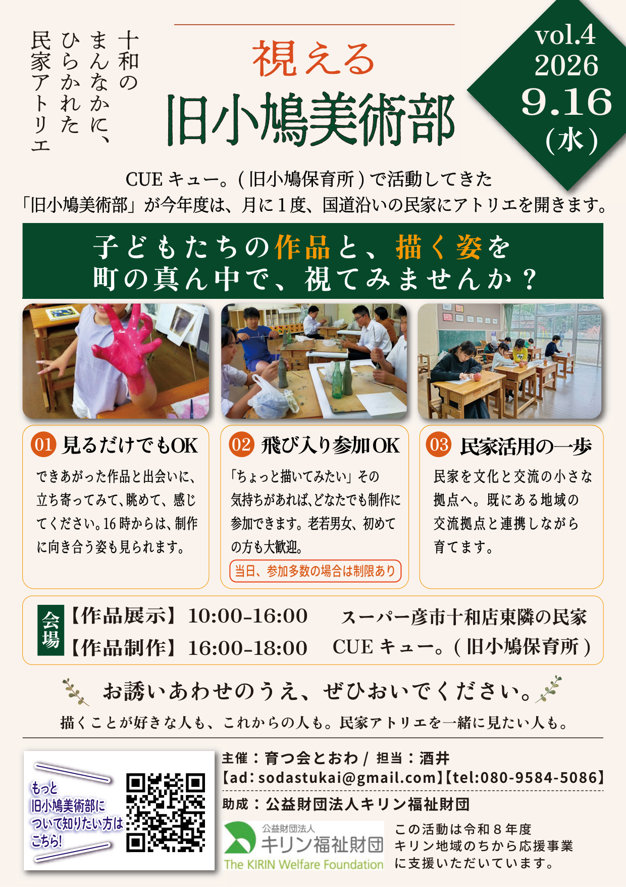

特別授業の絵が、まちの真ん中に並んだ日

「視える 旧小鳩美術部」、第4回。この日は、ところどころで大雨が降る一日でした。
M邸のギャラリーには、8月21日の特別授業「JINTAI」で描いた人体デッサンを並べました。 また、助成をいただいている公益財団法人キリン福祉財団から、 事務局長が視察に来てくださいました。
📸 当日の様子
※ 写真はクリック（タップ）で拡大。長いキャプションも、拡大すると全文が読めます。







✍️ この日のながれ
午前10時から午後4時まではM邸で作品を展示し、「とおわのお茶堂」との同時開催。 午後4時からはCUEキュー。（旧小鳩保育所）へ移って制作、という、第3回と同じかたちです。 モチーフはロールパン。一人にひとつずつ用意しました。 これまでのモチーフの流れから、先生の中で「ロールパン」がしっくり来たそうです。
大雨で、M邸には影響もあったと思いますが、8名の方が足を運んでくださいました。 チラシは、学校関係とスーパーに85枚を配布しています。
🤝 キリン福祉財団の視察
ところどころで大雨が降るなか、公益財団法人キリン福祉財団の事務局長が、 M邸から視察に来てくださいました。
こちらからは、地域の空き家事情や「とおわのお茶堂」のこと、 美術の活動と空き家の支援をどう重ねているのか、 そしてCUEキュー。の宣伝も兼ねていることなどをお話ししました。
いっぽうで財団の方からは、国内のほかの団体の活動の様子をうかがうことができました。 それぞれの活動に地域性が表れているということが感じられるお話でした。
📡 JINTAIの反響と、この日の参加
開催の前日、9月15日には、NHK高知の「CATV便り」で特別授業「JINTAI」の概要が放送されました。 新聞やケーブルテレビも含めて、反響はありました。 LINEでの連絡や、保育所の所長さんからの声かけなど、いくつも届いています。
ただ、それがこの日の参加にはっきり表れたかというと、そうとは言えません。 美術部のほうには、放送を見て来られた方もいたのかもしれませんが、確かなことは分かりません。
💭 手応え
🧭 いちばんの発見：講師より（ロールパンを描く）
- 準備中
🌿 まとめと、次回のこと
🗒 開催のおしらせ（チラシ）
